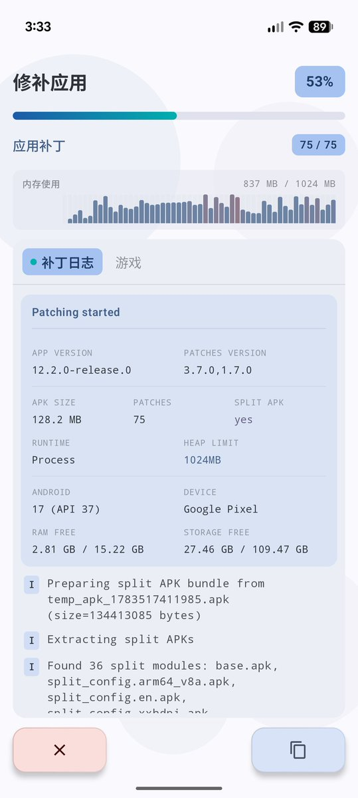
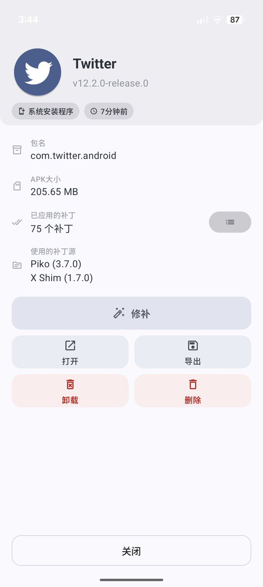

Pavlova
@pavlova233
@mario_2333 只是 piko 没有 官方版本还是有登录限制的 (这下不得不用修改版了


🍭Mario🐈
@mario_2333
以前用的修改版好久没更新发行版包了，于是自己尝试编译了一份最新版本的推特，比想象的简单好多qwq
因为自己编译的签名不同不能覆盖安装，所以先再备用机上测试过，发现现在似乎没有登录限制了吗，直接用户名密码就行了qwq
好处就是现在终于能用app回复推文了！私信也可以使用了！ https://t.co/EySXwNU9HF